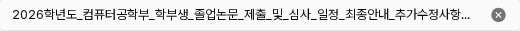

첨부 파일명과 삭제 상태
DS-031 B · DS-032 확정·적용파일명 · 한 줄 말줄임
긴 이름이 고정된30px 행을 넘어가던 문제를 해결했다. 선택한 B안대로 520px 폭·30px 높이를 유지하고 이름만 …로 생략한다. 삭제 버튼은19px로 줄어들지 않는다.
변경 전

B 실제 적용

전체 이름은 원문 텍스트와 삭제 버튼의 읽기 이름에 유지한다. 파일명 위에서는 브라우저 기본 툴팁으로 확인할 수 있다. 기본 툴팁이 키보드 사용자에게도 시각적으로 나타나는 것을 보장하지는 않는다.
긴 한국어·짧은 이름·공백 없는 영어

승인 전 다른 안
A는 긴 이름에 따라 행 높이를 늘리는 안이었다. 사용자는 한 줄 밀도를 유지하는 B를 선택했다.

삭제 아이콘 · 기본과 호버
기존 원형 X·흰 글자·19px 크기를 유지한다. 기본 #737373에서 호버 #404040으로 바뀌어 포인터 반응을 전달한다. 기존 중립색500/700을 참조한다.
기존 기본·호버

#a3a3a3
적용 기본

#737373
적용 호버
#404040
확인한 범위
공지 작성1200/1280px의 세 파일명·행 크기·삭제 크기, 호버/이탈 색·키보드 초점·Enter 삭제를 확인했다. 로컬 파일만 선택했고 업로드·저장은 하지 않았다. 전체 페이지 회귀는5단계에 남는다.
결정 근거·한계 · 실제 측정 · 컴포넌트 적용 현황